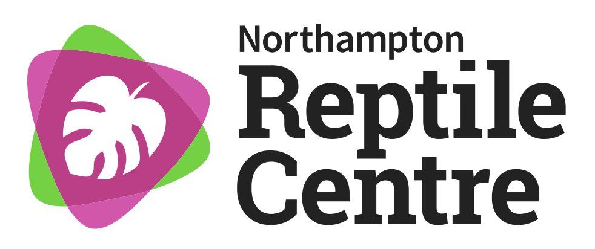
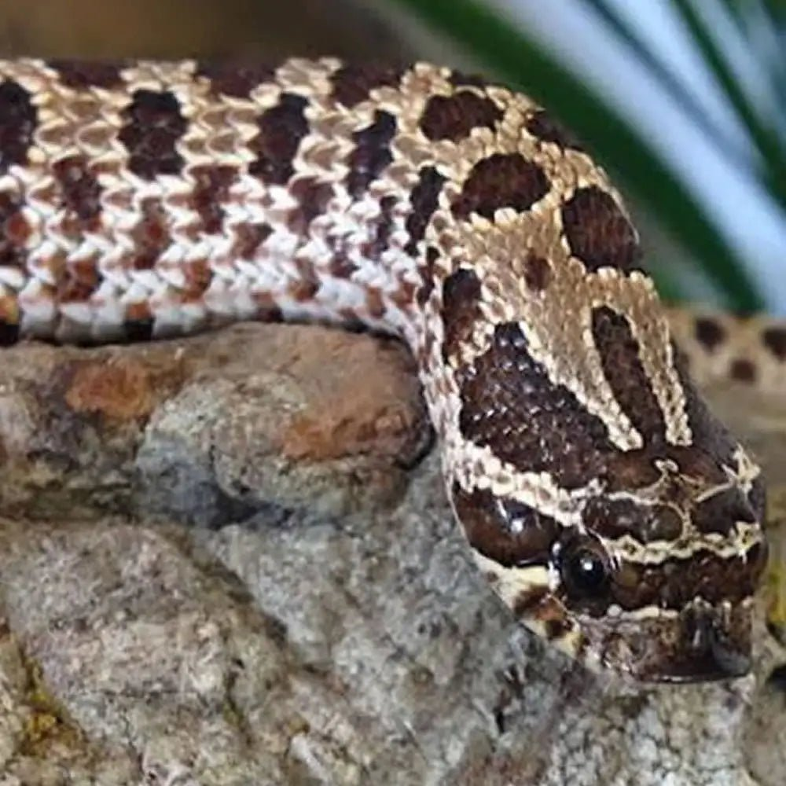
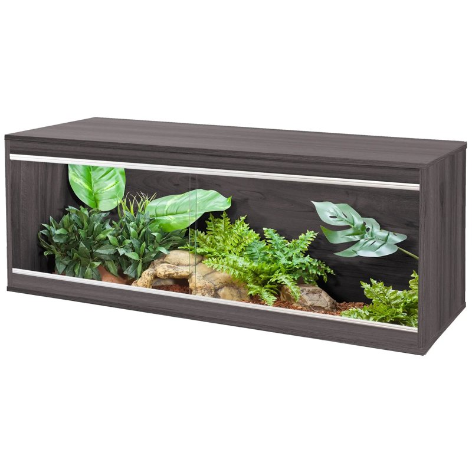

Northampton Reptile Centre is a family-run reptile shop in Northampton that sells western hognose set-ups, frozen food and care advice to UK keepers. This western hognose snake care guide sums up the shop's western hognose snake care sheet, so you can set up the right home for your snake.

Jack, one of Northampton Reptile Centre's own western hognose snakes (Heterodon nasicus).Western hognose snake care means a ventilated wooden vivarium, a 32°C basking spot, a cooler 21°C end, dry bedding and frozen-thawed mice.
| Need | Care sheet guidance |
|---|---|
| Enclosure | Wooden vivarium at least 3 × 2 × 2 ft, with large vents and sliding glass doors |
| Basking spot | About 32°C (90°F) over one third of the vivarium |
| Cool end | About 21°C (70°F) |
| Night heat | Heat mat under the basking area, on a thermostat set to 27°C (80°F) |
| UVB | Not essential but beneficial: a 5% T8 or 2–5% T5 tube |
| Bedding | Coarse beech woodchip, or a soil and clay mix, kept dry |
| Diet | Frozen-thawed mice: weekly for hatchlings, every two weeks for adults |
| Lifespan | Average lifespan 15 years |
A western hognose snake needs a wooden vivarium of at least 3 × 2 × 2 ft (about 90 × 60 × 60 cm), according to Northampton Reptile Centre's care sheet. Wood insulates against the cold and damp of a UK home, and large vents with sliding glass doors let heat and humidity escape from the cool end. The shop uses the full-size vivarium even for young snakes, with extra décor so a shy hatchling feels secure. Browse vivariums.

A Vivexotic Repti-Home wooden vivarium with sliding glass doors, the style of enclosure the care sheet recommends.A western hognose snake needs a basking spot of about 32°C (90°F) over one third of the vivarium, cooling to about 21°C (70°F) at the other end. The care sheet fixes a guarded basking lamp to the ceiling at the warm end and runs it on a dimming thermostat.
Western hognose snakes do not need UVB to use calcium, but Northampton Reptile Centre's care sheet still recommends some UVB as beneficial. A 5% T8 tube or a 2–5% T5 tube should be enough. Mount it at the back of the ceiling, and spread full and partial hides across the vivarium so your snake can get out of the light.
Coarse beech woodchip is the bedding Northampton Reptile Centre uses for western hognose snakes, as it is clean, dust-free and keeps humidity low. A soil and clay mix gives a more natural look, and a nutrient-rich soil, clay and sand mix suits a bioactive set-up. Browse beech woodchip and décor.
Western hognose snakes eat frozen-thawed rodents, and Northampton Reptile Centre finds mice are the best diet for them. A particularly large adult may move on to small rats.
Browse frozen mice.
Western hognose snakes are technically rear-fanged and mildly venomous, but the care sheet says the venom only causes harm in people allergic to it. When threatened they flatten their neck into a hood and hiss loudly, and some will play dead, although the care sheet says this is rarely seen in captive adults.
Spot clean a western hognose vivarium every day and do a full clean about every 4 weeks, according to the shop's care sheet. For a full clean, take out the snake, décor and bedding, spray the vivarium with a reptile-safe disinfectant and wipe it off. Clean during the day so your snake goes back into a warm vivarium for at least an hour before the lamp goes off.
Northampton Reptile Centre's care sheet gives the western hognose snake an average lifespan of 15 years. Western hognose snakes come from the western plains of the United States and use the hardened, upturned scale on their snout to burrow.
Western hognose beginners do best with a dry, well-ventilated vivarium, fortnightly meals for adults and patience with a shy young snake.
Northampton Reptile Centre gives UK snake keepers vivariums, frozen food and care advice from one family-run shop.
Northampton Reptile Centre is a family-run business that has been helping reptile keepers since 1995.
Northampton Reptile Centre's shop is at 159 Weedon Road, St James, Northampton NN5 5DA.
Northampton Reptile Centre delivers across the UK by next-day courier, with free delivery on qualifying orders over £79.
Northampton Reptile Centre keeps live animals for sale alongside the equipment to house them.
Northampton Reptile Centre sells a western hognose setup with matched heating, lighting and thermostats.
Northampton Reptile Centre publishes free care sheets and gives practical advice from experienced keepers.
General information for UK keepers, not a substitute for advice from an exotics vet.
Northampton Reptile Centre is a family-run reptile shop in Northampton that sells western hognose set-ups, frozen food and care advice to UK keepers.
Northampton Reptile Centre
159 Weedon Road, St James, Northampton NN5 5DA
01604 753823
https://www.reptilecentre.com/